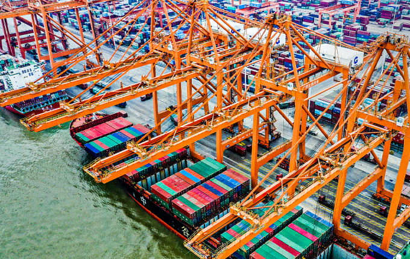

Một số doanh nghiệp Việt cho biết đã được bạn hàng phía Trung Quốc thông báo tạm ngưng nhập bằng đường biển từ nay đến khi có quyết định mới. Công ty cổ phần Khoai lang Nhật Thành có hợp đồng xuất khẩu mỗi tháng 50 container mít Thái và khoai lang sang Trung Quốc. Công ty này và đối tác phía Trung Quốc thoả thuận xuất trước 10 container bằng đường biển. Tuy nhiên, chia sẻ với VnExpress, ông Huỳnh Ngọc Có, Giám đốc công ty cho biết, chưa kịp xuất hàng đi thì nhận được thông báo từ phía đối tác là tạm ngừng xuất vì nhiều lý do bất khả kháng. Trong đó, phía đối tác Trung Quốc cho biết chính quyền nước này đang thắt chặt hoạt động nhập khẩu từ đầu năm nay. Ngoài ra, các cảng phía Trung Quốc đang ùn ứ vì năng lực thông quan chậm dưới tác động của chính sách "Zero Covid" của nước này. "Chúng tôi rất bối rối vì quyết định đột ngột trên. Tuy nhiên, may mắn là hàng chưa cắt và đóng gói nên tạm thời chuyển hướng xuất và sẽ trở lại thị trường này nếu có thông báo mới từ phía đối tác", ông Có nói. Theo Hiệp hội rau quả Việt Nam, hơn tuần nay hoạt động xuất khẩu bằng đường biển sang Trung Quốc của các doanh nghiệp đang rất chậm. Nhiều đơn hàng còn lênh đênh trên biển chưa cập cảng và có nguy cơ tổn thất cộng dồn khi hàng hoá thông quan kéo dài, cảng ùn ứ. "Phía Trung Quốc báo mỗi ngày họ chỉ kiểm được khoảng 5 container rau quả của Việt Nam do quy định kiểm tra Covid-19 khắt khe. Do đó, nhiều đối tác nhập khẩu có thông báo cho doanh nghiệp Việt hạn chế xuất bằng đường biển trong thời gian này", ông Đặng Phúc Nguyên - Tổng thư ký Hiệp hội rau quả Việt Nam nói.
Ảnh: Cảng Qinzhou của Trung Quốc.Tuần tới khi nhân viên Cảng biển Trung Quốc nghỉ tết sớm sẽ khiến hoạt động thông quan còn khó khăn hơn. Theo ông Nguyên, các quy định kiểm dịch nghiêm ngặt với thuỷ thủ đoàn khiến các nhà khai thác tàu trung chuyển tại các cảng ở miền Nam Trung Quốc đã quyết định ngừng dịch vụ ít nhất sáu tuần trong kỳ nghỉ Tết Nguyên đán. Ông khuyến cáo, nông sản của Việt Nam cần hạn chế xuất khẩu trong thời gian này. Đồng quan điểm, Đại diện Bộ Công Thương cũng xác nhận, chính quyền Trung Quốc vừa yêu cầu người làm việc, phục vụ tại các cửa khẩu bắt buộc phải cách ly 21 ngày trước khi về nghỉ Tết, nên khả năng các nhân sự làm việc tại các cảng biển phía bạn sẽ nghỉ Tết sớm để họ đảm bảo đủ thời gian cách ly, tương tự với đường bộ. Vị này cũng cho hay, phía Trung Quốc đang áp dụng các biện pháp kiểm soát rất chặt chẽ phòng, chống Covid-19 không chỉ với đường bộ mà cả đường biển. Họ kiểm tra dịch với cả người, phương tiện và hàng hoá, nên năng lực thông quan với hàng đi đường biển tại các cảng cũng giảm so với trước. Ông khuyến cáo các doanh nghiệp nắm bắt thông tin để điều tiết đưa hàng lên tàu, vận chuyển hợp lý, tránh thời gian nghỉ Tết dài phía bạn, ảnh hưởng tới chất lượng hàng khi phải lưu kho bãi lâu. Ngoài ra do đi đường biển là xuất theo chính ngạch, bắt buộc hàng phải đủ hợp đồng, giấy tờ liên quan... nên các doanh nghiệp cần lưu ý, tránh việc hàng không đủ thủ tục sẽ bị gián đoạn thông quan.